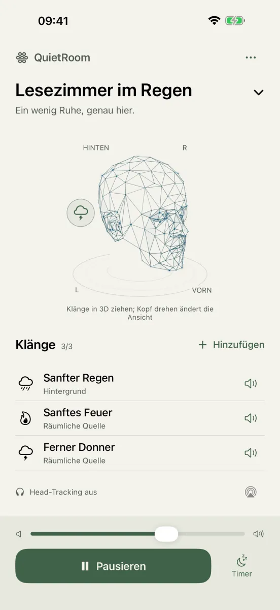
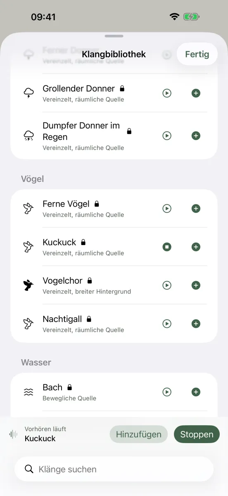
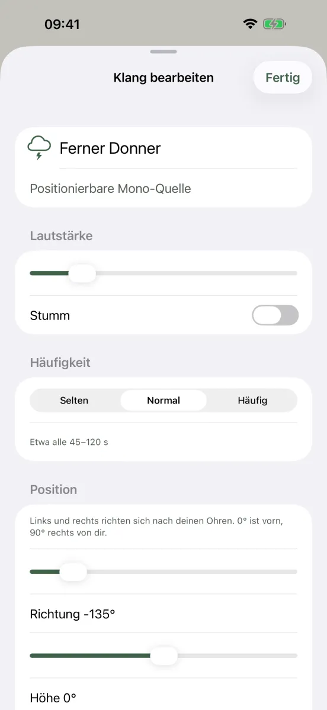
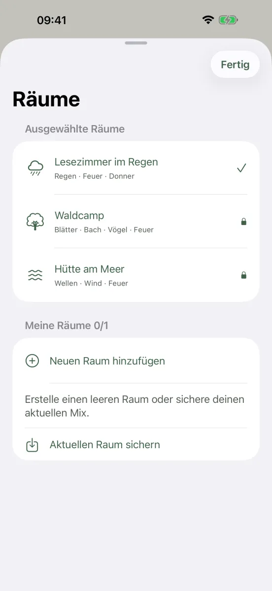

Klänge im echten Raum
Zieh jeden Klang um einen 3D-Hörer: links oder rechts, vor oder hinter dich, nach oben oder unten. Oder lege Richtung, Höhe und Entfernung genau fest. Breite Hintergründe bleiben stabil um dich herum.
Für iPhone · ab iOS 18
QuietRoom platziert Naturklänge um dich herum: Regen am Fenster links, ein Bach vor dir, ein Feuer direkt hinter dir. Setz Kopfhörer auf, starte die Wiedergabe und gestalte den Raum, bis er sich richtig anfühlt.

Zieh jeden Klang um einen 3D-Hörer: links oder rechts, vor oder hinter dich, nach oben oder unten. Oder lege Richtung, Höhe und Entfernung genau fest. Breite Hintergründe bleiben stabil um dich herum.
Regen, Donner, Vögel, Bäche, Wellen, Wind, Insekten, Schritte und Feuer. Die Aufnahmen variieren natürlich, damit der Raum nie wie eine kurze Schleife wirkt. Hör jeden Klang vor, auch Pro-Klänge, bevor du ihn hinzufügst.
Donner, Vogelgesang, Tropfen und Schritte kommen ab und zu. Wähle für jeden Klang Selten, Normal oder Häufig. Schritte können auch gleichmäßig gehen.
Starte mit Lesezimmer im Regen, Waldcamp oder Hütte am Meer oder beginne mit einem leeren Raum. Änderungen werden automatisch gesichert; gesicherte Räume kannst du jederzeit umbenennen, duplizieren oder ersetzen.
Mit kompatiblen Kopfhörern bleiben räumliche Klänge an ihrem Platz, wenn du den Kopf drehst. Normale Kopfhörer bieten weiterhin festen räumlichen Klang.
Kein Account, keine Werbung, keine Analysen. Die Klänge sind in der App enthalten, daher funktionieren Hören, Bearbeiten und Sichern ohne Verbindung. Ein Schlaftimer blendet sanft aus.



Einmaliger Kauf · kein Abo
Den Preis zeigt dir der App Store in deiner Region an.